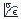

Modelagem de uma viga hipérestática sob ação do seu peso próprio
Objetivo
Avaliar a viga de secção retangular esquematizada abaixo quando submetida apenas à ação de seu peso próprio (p.p.).
{kind=link}
| Propriedades da viga | |:---------------------------:|:----------:| | L (m) | 1.00 | | b (cm) | 5.08 | | h (cm) | 5.08 | | E (GPa) | 206 | | p.p. (kg/m³) | 7830 |
Resolução utilizando o abaqus 6.12 student edition
O procedimento usual de resolução é demonstrado no seguinte fluxograma, cuja ordem pode eventualmente ser alterada por conveniência:

1. Pré-processamento
1.1. Início da análise
- Na caixa Start Session, selecione With Standard/Explicit Model.
- No Menu Model, clique com o botão direito em Model-1 e selecione Rename.
- Digite Viga e clique em OK.
1.2. Criação da geometria base e definição do tipo de elemento
- No Menu Model, dê um duplo clique em Parts.
- No campo Name digite ParteViga.
- Em Modeling Space selecione 2D planar.
- Em Base Feature selecione Wire.
- Em Approximante Size digite 20 e clique em Continue...
{kind=link}
- Na Caixa de Ferramentas, selecione Create Lines: Connected.
- Na área de comando insira as coordenadas 0,0 e 2.54,0.
- Desative a função Create Lines: Connected apertando a tecla Esc do teclado e clique em Done.
{kind=link}
1.3. Atribuição das propriedades da seção da viga
- No Menu Model, dê um duplo clique em Sections.
- Em Name digite SeçãoViga.
- Em Category selecione Beam.
- Em Type selecione Beam e clique em Continue...
{kind=link}
- Clique no icone .
- Em Name digite Beam, selecione Rectangular e clique em Continue...
{kind=link}
- Insira o valor 0.0508 para a e b e clique em OK
{kind=link}
1.4. Atribuição das propriedades dos materiais
- Ainda na janela Edit Beam Section, clique no icone .
- Na caixa Edit Material clique em Mechanical, selecione Elasticity e clique em Elastic.
- Em Young’s Modulus digite 206E9.
{kind=link}
- Clique agora em General e em seguida em Density.
- Em Mass Density digite 7830 e clique em OK nas duas janelas abertas.
{kind=link}
1.5. Associação das seções
- No Menu Model, abra Parts (1) e em seguida ParteViga.
- Clique duas vezes em Section Assigments.
- Selecione a viga e clique em Done.
- Selecione Beam e clique em OK.
{kind=link}
- Na Caixa de Ferramentas, clique no icone
 .
. - Clique em Sets..., selecione Set-1 e clique em Continue...
{kind=link}
- Tecle Enter, clique em OK, em Dismiss e em seguida em Done.
{kind=link}
- No Menu Model, abra Assembly e dê um duplo clique em Instances.
- Certifique-se que está selecionado Dependent (mesh on part) em Instance Type e clique em OK.
{kind=link}
1.6. Aplicação das condições de contorno
1.6.1 Cargas
- No Menu Model, dê um duplo clique em Steps (1).
- Renomeie para Carregamento e clique Continue...
- Em Edit Step clique em OK.
{kind=link}
- No Menu Model, dê um duplo clique em Loads.
- No campo Name digite Gravidade.
- Em Types for Selected Step selecione Gravity e clique em Continue...
{kind=link}
- Em Edit Load digite -9.81 no campo Component 2 e clique em OK.
{kind=link}
1.6.2 Apoios
- No Menu Model, dê um duplo clique em BCs.
- No campo Name digite Apoio Móvel.
- Em Step selecione Initial.
- Em Types for Selected Step selecione Displacement/Rotation, clique em Continue… e em seguida em Dismiss.
- Selecione a extremidade esquerda da viga e clique em Done.
- Na janela Edit Boundary Condition selecione U2 e clique em OK.
{kind=link}
- Repita este procedimento para criar o Engaste, marcando Symetry/ antisymmetry/Encastre, selecionando a extremidade direita da viga e selecionando ENCASTRE(U1=U2=U3=UR1=UR2=UR3=0).
{kind=link}
1.7. Criação da malha
- No Menu Model, dê um duplo clique em Mesh (Empty).
- Na Barra de Contexto, em Object, selecione Part.
- No Menu Principal, clique em Mesh e posteriormente em Element Type.
- Selecione a viga e clique em Done.
- Na janela Element Type selecione Beam em Family.
- Em Geometric Order selecione Quadratic.
- Clique em OK e em seguida em Done.
{kind=link}
- No Menu Principal, clique em Seed e posteriormente em Part.
- Em Approximate Global Size digite 0.05, clique em OK e em seguida Done.
{kind=link}
- No Menu Principal, clique em Mesh e posteriormente em Part.
- Aparecerá a pergunta "OK to mesh the part?", clique Yes.
{kind=link}
1.8. Definição das variáveis de saída
- No Menu Model, abra Field Output Requests (1) e dê um duplo clique em F-Output-1.
- Desmarque todas as variáveis com excessão de:
- SE, Section strains and curvatures.
- U, Translations and rotations.
- RF, Reaction forces and moments.
- SF, Section forces and moments.
- BF, Body forces.
- Em seguida, clique em OK.
2. Processamento
- No Menu Model, dê um duplo clique em Jobs.
- Na janela Create Job clique em Continue...
- Na janela Edit Job clique em OK.
- Abra Jobs e clique com o botão direito em Job-1 e clique em Submit.
- Se aparecer uma janela dizendo “Job files already exist for Job-1. OK to overwrite?”, clique OK.
- Aguarde o processamento dos dados, que estará concluído quando aparecer (Completed) ao lado de Job-1 no Menu Model.
3. Pós-processamento
3.1. Análise gráfica
- No Menu Model, clique com o botão direito em Job-1(Completed) e clique em Results.
- Na Caixa de Ferramentas, clique em Plot Contours on Deformed Shape.
- Na Área de Ferramentas no canto superior à direita selecione SM e SM1.
- No Menu Principal, clique em Viewport e em seguida em Viewport Annotation Options...
- Na janela aberta selecione a aba Legend.
- Clique em Set Font.
- Na nova janela, altere Size para 14.
- Clique em OK nas duas janelas abertas.
{kind=link}
3.2. Variáveis de saída
- No Menu Principal, clique em Report e em seguida em Field Output....
- Na janela Report Field Output, abra SM: Section Moments, selecione SM1 e clique OK.
- A mensagem aparecerá: "The field output report was appended to file “abaqus.rpt". O arquivo abaqus.rpt pode ser encontrado em C:\Users\”Nome do Usuário”\abaqus.rpt.
- O arquivo listará os momentos fletores na viga.
{kind=link}
- Marcando-se U: Spacial Displacement obtêm-se os deslocamentos na viga.
{kind=link}
- Marcando-se RF: Reaction forces obtêm-se as reações de apoio na viga.
{kind=link}
- Por fim, marcando-se SF2 em SF: Section Forces, obtêm-se os esforços cortantes na viga.
{kind=link}
- No Menu Principal, clique em File e em seguida em Save As...
- Dê um nome ao arquivo e clique em OK.